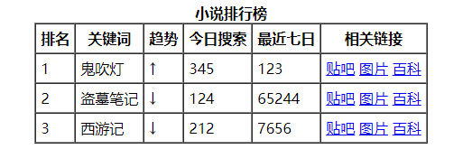
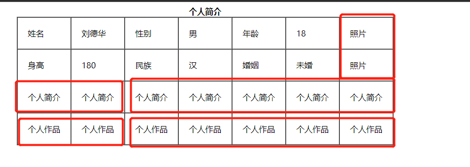

1.概述
表格现在还是较为常用的一种标签，但不是用来布局，常见显示、展示表格式数据。因为它可以让数据显示的非常的规整，可读性非常好。
后台展示数据的时候表格运用是否熟练显得特别重要，一个清爽简约的表格能够把繁杂的数据表现得很有条理，虽然 div 布局也可以做到，但是总没有表格来得方便。
2.表格使用
2.1 创建表格
在HTML网页中，要想创建表格，就需要使用表格相关的标签。
创建表格的基本语法：
1
2
3
4
5
6
7
<table>
<tr>
<td>单元格内的文字</td>
...
</tr>
...
</table>
| 表格标签 | 含义 | 说明 |
|---|---|---|
| table | 表格标签 | table |
| tr | 表格中的行，必须嵌套在 table标签中 | table row |
| td | 用于定义表格中的单元格，必须嵌套在tr标签中 | table data |
| th | 表头单元格标签th | table head |
| caption | 表格标题caption,caption 标签必须紧随 table 标签之后,且必须处于table中 | table caption |

2.2 表格属性
表格有部分属性我们不常用，这里重点记住 cellspacing 、 cellpadding
| 属性名 | 含义 | 常用属性值 |
|---|---|---|
| border | 设置表格的边框（默认border=0，无边框） | 像素值 |
| cellspacing | 设置单元格之间的空白距离 | 像素值（默认2像素） |
| cellpadding | 设置单元格内容与单元格边框之间的距离 | 像素值（默认1像素） |
| width | 设置表格的宽度 | 像素值 |
| height | 设置表格的高度 | 像素值 |
| align | 这是表格在网页中的水平对齐方式 | left、center、right |
| rowspan | 合并行单元格 | 数值（合并个数） |
| colspan | 合并列单元格 | 数值（合并个数） |
我们经常有个说法，是三参为0， 平时开发的我们这三个参数 border cellpadding cellspacing 为 0


2.3 表格合并
合并单元格是我们比较常用的一个操作，但是不会合并的很复杂。
| 合并方式 | 操作 |
|---|---|
| 跨行合并 | rowspan="合并单元格的个数" |
| 跨列合并 | colspan="合并单元格的个数" |
**合并的顺序我们按照 先上 后下 先左 后右 的顺序 **
合并流程：
- 先确定是跨行还是跨列合并
- 根据 先上 后下 先左 后右的原则找到目标单元格 然后写上 合并方式 还有 要合并的单元格数量 比如 ：
<td colspan="3"> </td> - 删除多余的单元格 单元格
`
1
2
3
4
5
6
7
8
9
10
11
12
13
14
15
16
17
18
19
20
21
22
23
24
25
26
27
28
29
30
31
32
33
34
35
36
37
38
39
40
41
42
43
44
<table border="1" cellspacing="0" cellpadding="20" align="center">
<caption><b>个人简介</b></caption>
<tr>
<td>姓名</td>
<td>刘德华</td>
<td>性别</td>
<td>男</td>
<td>年龄</td>
<td>18</td>
<td rowspan=2>照片</td>
</tr>
<tr>
<td>身高</td>
<td>180</td>
<td>民族</td>
<td>汉</td>
<td>婚姻</td>
<td>未婚</td>
<!-- 删除多余-->
<!-- <td>照片</td> -->
</tr>
<tr>
<td colspan="2">个人简介</td>
<!-- <td>个人简介</td> -->
<td colspan="5">个人简介</td>
<!-- <td>个人简介</td>
<td>个人简介</td>
<td>个人简介</td>
<td>个人简介</td> -->
</tr>
<tr>
<td colspan="2">个人作品</td>
<!-- <td>个人作品</td> -->
<td colspan="5">个人作品</td>
<!-- <td>个人作品</td>
<td>个人作品</td>
<td>个人作品</td>
<td>个人作品</td> -->
</tr>
</table>
2.4 复杂表格处理
对于比较复杂的表格，表格的结构也就相对的复杂了，所以又将表格分割成三个部分：题头、正文和脚注。而这三部分分别用:thead,tbody,tfoot来标注， 这样更好的分清表格结构
注意：
<thead></thead>：用于定义表格的头部。用来放标题之类的东西。<thead> 内部必须拥有 <tr> 标签！<tbody></tbody>：用于定义表格的主体。放数据本体 。<tfoot></tfoot>: 放表格的脚注之类。- 以上标签都是放到
table标签中。
1
2
3
4
5
6
7
8
9
10
11
12
13
14
15
16
17
18
19
20
21
22
23
24
25
26
27
28
29
30
31
32
33
34
35
36
37
<table border="1" cellspacing="0" align="center" width="500">
<thead>
<tr>
<th>姓名</th>
<th>性别</th>
<th>年龄</th>
</tr>
</thead>
<tbody>
<tr>
<td>刘德华</td>
<td>男</td>
<td>55</td>
</tr>
<tr>
<td>刘若英</td>
<td>女</td>
<td>35</td>
</tr>
<tr>
<td>刘晓庆</td>
<td>女</td>
<td>65</td>
</tr>
<tr>
<td>刘三姐</td>
<td>女</td>
<td>15</td>
</tr>
</tbody>
<tfoot>
<tr>
<td>信息地址</td>
<td colspan="2"> 北京市金燕龙校区举办演唱会</td>
</tr>
</tfoot>
</table>